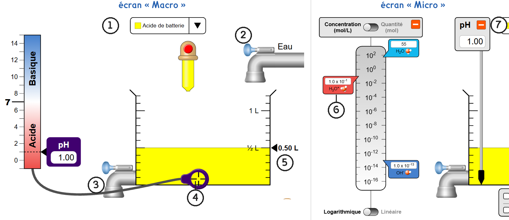
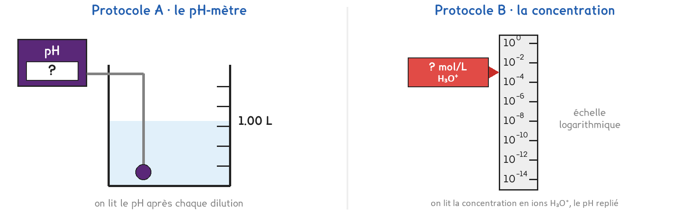

Tle Bac Pro · CTRM · OBM · TP sur simulation SIM-15
Que devient le pH d'un acide quand on le dilue dix fois, puis encore dix fois ? L'eau peut-elle le rendre neutre ?
2 figures
Sujet. Une goutte d’acide de batterie tombe sur le sol du garage. On rince à grande eau : l’acide est dilué. Mais l’eau fait-elle disparaître l’acidité, ou l’affaiblit-elle seulement ?
Problématique : que devient le pH d’un acide quand on le dilue dix fois, puis encore dix fois ? L’eau peut-elle le rendre neutre ?
La simulation. « Échelle de pH », écrans « Macro » et « Micro », sur phet.colorado.edu. Un bécher, deux robinets, un pH-mètre, et les concentrations des ions. Sans réseau : la copie hors ligne, fichier phet/ph-scale_fr.html.

Captures de la simulation « Échelle de pH », PhET Interactive Simulations, University of Colorado Boulder, CC BY-NC 4.0.
a) Écrire dans chaque case le numéro de la figure qui correspond.
| la liste des solutions : ……… | le robinet d’eau : ……… | le robinet de vidange : ……… | la sonde du pH-mètre : ……… |
|---|---|---|---|
| le volume de la solution : ……… | la concentration en ions H3O+ : ……… | le bouton qui replie le pH : ……… |
Dans tout le TP, on dilue au dixième : on garde 0,10 L de solution et on complète avec de l’eau jusqu’à 1,00 L.
b) Compléter pour une dilution au dixième.
| On garde | 0,10 L = ……… mL |
|---|---|
| On complète jusqu’à | 1,00 L = ……… mL |
| Volume d’eau ajouté | ……… L |
| La concentration de l’acide est divisée par | ……… |
La simulation écrit « 1.0 x 10^-2 » : il faut lire 1,0 × 10−2 mol/L.
c) Écrire en puissance de 10. Le premier est fait.
| 0,1 = 10−1 | 0,01 = 10……… | 0,0001 = 10……… | 10−2 ÷ 10 = 10……… |
|---|
Deux protocoles répondent à la même question. Une partie de la classe prend A, l’autre prend B, et on compare à la fin.

Protocole A · le pH-mètre. Écran « Macro ». On dilue l’acide au dixième, puis on lit son pH avec la sonde, et l’on recommence sur la solution obtenue. On en calcule la concentration en ions H3O+ : [H3O+] = 10−pH, en mol/L.
Protocole B · la concentration. Écran « Micro », panneau « pH » replié. Même dilution ; on lit la concentration en ions H3O+ sur l’échelle logarithmique. On en calcule le pH : pH = −log[H3O+].
d) Compléter le tableau pour comparer les deux protocoles.
| Protocole A | Protocole B | |
|---|---|---|
| L’écran de la simulation | …………………………… | …………………………… |
| Ce qu’on lit | …………………………… | …………………………… |
| Ce qu’on calcule, avec quelle touche | …………………………… | …………………………… |
Le choix se fait maintenant, avant de toucher à la simulation. Le professeur peut imposer l’un des deux protocoles pour équilibrer la classe.
e) Quel protocole prenez-vous ? Justifier en une phrase.
Je prends le protocole ……… parce que ……………………………………………………………………
f) Avant de mesurer : après une dilution au dixième, le pH d’un acide, entourer :
diminue de 1 · est divisé par 10 · augmente de 1 · ne change pas
Avant de commencer. Choisir « Acide de batterie » dans la liste : le bécher se remplit jusqu’à 0.50 L. En A : écran « Macro », sonde plongée dans l’acide. En B : écran « Micro », panneau « pH » replié par son bouton « − », « Concentration (mol/L) » et « Logarithmique » choisis.
Au laboratoire, une dilution au dixième se fait avec une pipette jaugée de 10 mL et une fiole jaugée de 100 mL.
g) Schématiser les trois gestes d’une dilution au laboratoire : prélever, verser, compléter jusqu’au trait de jauge. Nommer la verrerie.
Le schéma se dessine sur la feuille du TP.
h) Relever ce que lit votre protocole, puis calculer l’autre colonne.
| Dilution | pH (A : lu · B : calculé) | [H3O+] en mol/L (A : calculée · B : lue) |
|---|---|---|
| 0, l’acide de départ | ||
| 1 | ||
| 2 | ||
| 3 | ||
| 4 | ||
| 5 | ||
| 6 |
i) Dilutions 1 à 4 : de combien le pH augmente-t-il à chaque fois ? Par combien la concentration en ions H3O+ est-elle divisée ?
Aux dilutions 5 et 6, cette règle ne marche plus.
j) Vers quelle valeur le pH tend-il ? Pourquoi ne la dépasse-t-il pas ?
k) Votre hypothèse de la question f est-elle confirmée ? Un groupe qui a pris l’autre protocole trouve-t-il les mêmes valeurs ?
Au laboratoire, on dilue de l’acide chlorhydrique et on lit un vrai pH-mètre.
l) Citer deux choses de ce montage que la simulation ne montre pas.
m) Répondre à la problématique en deux phrases.
Retour au garage. Pour faire passer un litre d’acide de pH 1 à pH 5, quel volume d’eau faut-il, environ ? Entourer : 10 L · 1 000 L · 10 000 L · 1 000 000 L
Ce que ce TP a établi, et qui vaut pour toute solution aqueuse :
À RETENIR
Le pH d’une solution dépend de sa concentration en ions H3O+ : pH = −log[H3O+], soit [H3O+] = 10−pH, en mol/L. Plus [H3O+] est grande, plus le pH est faible.
Diluer un acide dix fois divise [H3O+] par 10 et fait monter son pH d’une unité. La dilution rapproche le pH de 7 sans jamais le dépasser : l’eau affaiblit un acide, elle ne le neutralise pas.
Choisir « Déboucheur », de pH 13, et le diluer deux fois au dixième. Dans quel sens le pH évolue-t-il, et vers quelle valeur ? ……………………………………………………………………
TP sur simulation de physique-chimie. Le travail se fait sur la feuille du TP : cette page en est la version à l'écran, sans les lignes à remplir. Rien n'est enregistré.